Sách Kết nối tri thức • Học từng bài một: đọc từng đoạn ngắn (hoặc bấm 🔊 nghe bài) → trả lời câu hỏi nhanh ngay trong bài → xem ⭐ Điểm cần nhớ → lật flashcard của bài. Học hết 12 bài mới xuống Phần Tổng kết ở cuối trang nhé!
📖 Phần 1 — Học tập (học từng bài)
Nhãn trên mỗi bài: ⭐ Ôn giữa kì 1 = Bài 1–3 • 📚 Sau giữa kì 1 = Bài 4–6 • ⭐ Ôn giữa kì 2 = Bài 7–9 • 📚 Sau giữa kì 2 = Bài 10–12. Mỗi bài đều có nút 🔊 Nghe bài — em đọc chưa thạo cũng nghe và học được. Thẻ ⚡ Nhớ nhanh bấm vào là lật xem đáp án ngay, không tính điểm đâu, cứ thoải mái thử!
⭐ Ôn giữa kì 1
Bài 1. Tự hào về truyền thống gia đình, dòng họ
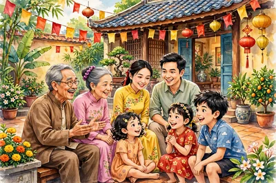
🎬 Sáng mùng một Tết, cả nhà Lan quây quần bên bàn thờ. Ông nội thắp hương. Bố kể chuyện ngày xưa của dòng họ. Lan nghe mà thấy ấm lòng. Gia đình em có những chuyện xưa nào hay như thế không?
Truyền thống là những điều tốt đẹp của gia đình.
Những điều tốt đẹp ấy được truyền qua nhiều đời: từ ông bà, đến cha mẹ, rồi đến con cháu.
Nói dễ hiểu: truyền thống là “nếp nhà” tốt đẹp được giữ qua nhiều đời.
Hiếu học nghĩa là rất ham học, coi việc học là quan trọng.
⚡ Nhớ nhanh
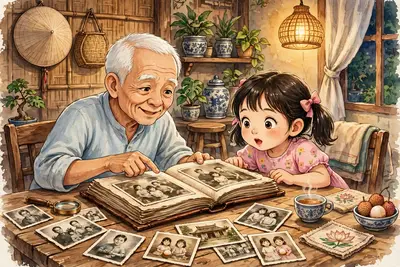
Truyền thống gia đình là gì?
Là những điều tốt đẹp được truyền qua nhiều đời trong gia đình.
Thờ cúng tổ tiên: con cháu nhớ ơn ông bà, tổ tiên. Ngày giỗ là ngày tưởng nhớ người thân đã mất — hôm đó cả nhà sum họp.
Yêu thương, đùm bọc nhau: người trong nhà luôn giúp đỡ nhau.
Nghề truyền thống: cả nhà cùng làm một nghề qua nhiều đời, như làm gốm, làm bánh, dệt vải.
Gia phả là cuốn sách ghi tên ông bà tổ tiên qua các đời. Tìm hiểu gia phả là một cách giữ truyền thống.
Ngày giỗ là ngày con cháu tưởng nhớ người thân đã mất. Hôm đó cả nhà thường sum họp, cùng thắp hương cho ông bà, tổ tiên.
Truyền thống tốt giúp gia đình gắn bó. Mọi người yêu thương nhau hơn.
Truyền thống tốt dạy em sống tốt. Em học theo điều hay của ông bà, cha mẹ.
Em giữ truyền thống bằng việc nhỏ mỗi ngày: học chăm, ngoan ngoãn, giúp việc nhà, nhớ ngày giỗ và ngày Tết của gia đình.
Đáp án: câu 2️⃣. Vì sao: cả đoạn đều nói về ngày giỗ — con cháu sum họp, tưởng nhớ tổ tiên. Câu 1️⃣ và 3️⃣ chỉ là chi tiết nhỏ trong đoạn (món ăn, chuyện kể), không phải ý chính của cả đoạn.
⚡ Nhớ nhanh
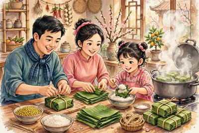
Nhìn hình: cả nhà đang làm gì để giữ truyền thống ngày Tết?
Cả nhà cùng gói bánh chưng — việc làm giữ nét đẹp truyền thống ngày Tết.
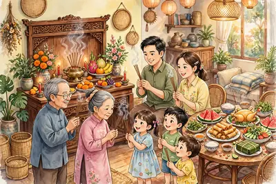
👨👩👧👦 Ngày giỗ, cả nhà sum họp. Con cháu thắp hương nhớ ông bà, tổ tiên — đó là truyền thống thờ cúng tổ tiên. (Tranh minh họa do AI vẽ)👴 Ông kể chuyện xưa cho cháu nghe. Nghe ông bà kể, em hiểu thêm về dòng họ của mình. (Tranh minh họa do AI vẽ)
⭐ Điểm cần nhớ:
Truyền thống = điều tốt đẹp truyền qua nhiều đời.
Ví dụ: thờ cúng tổ tiên, hiếu học, đùm bọc nhau, nghề truyền thống.
Truyền thống tốt làm gia đình gắn bó, dạy em sống tốt.
Em giữ truyền thống bằng: học chăm, ngoan, giúp việc nhà, nhớ ngày giỗ/Tết.
💡 Mẹo nhớ: Ba chữ T — Truyền thống = Tốt đẹp, Truyền đời, đáng Tự hào.
🔍 Bí mật thú vị: Có dòng họ ở Việt Nam giữ gia phả suốt mấy trăm năm! Cuốn gia phả giống như “cuốn truyện dài” của cả dòng họ vậy.
🧠 Sơ đồ tư duy
❓ Câu hỏi gợi nhớ
Là những điều tốt đẹp của gia đình, dòng họ, được truyền từ đời này sang đời khác.
Ví dụ: thờ cúng tổ tiên (sum họp ngày giỗ), hiếu học (ham học), yêu thương đùm bọc nhau. Có nhà còn có nghề truyền thống.
Đó là truyền thống thờ cúng tổ tiên — con cháu sum họp ngày giỗ để tưởng nhớ ông bà, tổ tiên.
Vì truyền thống tốt làm gia đình gắn bó, dạy em sống tốt, và là điều quý giá ông bà, cha mẹ để lại cho em.
Em ở nhà cùng gia đình làm giỗ và hẹn bạn hôm khác. Vì ngày giỗ là dịp nhớ ơn tổ tiên và sum họp gia đình — rất quý, không nên bỏ.
🎬 Trên đường đi học, Tuấn thấy một bà cụ xách túi rất nặng. Cụ đi rất chậm. Tuấn chạy tới: “Bà ơi, cháu xách giúp bà nhé!” Cụ cười thật hiền. Chỉ một việc nhỏ thôi, mà cả hai người đều vui.
Yêu thương con người là quan tâm, giúp đỡ người khác.
Là làm những điều tốt đẹp cho mọi người quanh em.
Ai cũng cần được yêu thương. Em cũng vậy.
⚡ Nhớ nhanh
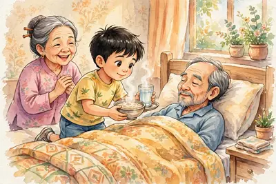
Yêu thương con người là gì?
Là quan tâm, giúp đỡ và làm điều tốt cho người khác.
Ở nhà: em chăm sóc ông bà khi ốm. Em nhường em nhỏ phần ngon.
Ở trường: em giảng bài cho bạn chưa hiểu. Em đỡ bạn khi bạn ngã.
Ngoài xã hội: em quyên góp sách vở giúp bạn vùng lũ. Quyên góp là gom góp đồ để tặng người đang cần.
Ca dao dạy ta: “Thương người như thể thương thân.” Nghĩa là: hãy thương người khác như thương chính mình.
Câu ca dao là “Thương người như thể thương thân” — hãy thương người khác như thương chính mình.
Yêu thương làm người nhận thấy ấm lòng. Người cho đi cũng thấy vui.
Nơi nào có nhiều yêu thương, nơi đó mọi người hạnh phúc hơn.
Trái với yêu thương là vô cảm. Vô cảm là thấy người gặp khó mà dửng dưng, không quan tâm, không giúp.
Đáp án: câu 2️⃣. Vì sao: cả đoạn kể về việc Linh chia sẻ áo mưa với bạn — đó là yêu thương. Câu 1️⃣ (trời mưa) và 3️⃣ (ướt áo) chỉ là chi tiết phụ quanh việc chính đó.
⚡ Nhớ nhanh
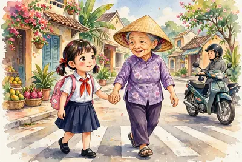
Nhìn hình: bạn nhỏ đang làm việc tốt gì?
Dắt bà cụ qua đường — việc làm thể hiện yêu thương con người.
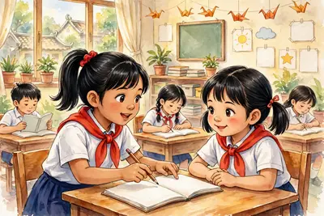
📚 Giảng bài cho bạn chưa hiểu là yêu thương ở trường. Bạn vui, em cũng vui. (Tranh minh họa do AI vẽ)
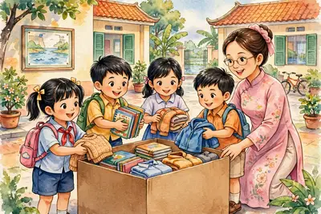
🎁 Quyên góp sách vở, quần áo tặng bạn vùng lũ — yêu thương biến thành việc làm thật. (Tranh minh họa do AI vẽ)
⭐ Điểm cần nhớ:
Yêu thương = quan tâm, giúp đỡ, làm điều tốt cho người khác.
Biểu hiện: chăm ông bà, giúp bạn học, quyên góp giúp người khó.
Yêu thương làm mọi người ấm lòng, xã hội hạnh phúc hơn.
Trái với yêu thương là vô cảm — em không làm thế.
💡 Mẹo nhớ:“Thương người như thể thương thân” — thương người như thương chính mình.
🔍 Bí mật thú vị: Khi em giúp ai đó, cơ thể em tiết ra chất làm em thấy vui và khỏe hơn. Các nhà khoa học gọi đó là “niềm vui của người cho đi”!
🧠 Sơ đồ tư duy
❓ Câu hỏi gợi nhớ
Là quan tâm, giúp đỡ và làm những điều tốt đẹp cho người khác.
Ví dụ: giảng bài cho bạn chưa hiểu và đỡ bạn khi bạn ngã. Rủ bạn mới cùng chơi cũng là yêu thương đấy.
Các bạn quyên góp sách vở, quần áo tặng người gặp khó khăn. Việc đó thể hiện yêu thương, chia sẻ với mọi người.
Vì yêu thương làm người nhận ấm lòng, người cho đi cũng vui, và xã hội sẽ hạnh phúc hơn.
Em đỡ bạn dậy, hỏi thăm bạn, rồi đưa bạn đến phòng y tế (hoặc báo thầy cô). Giúp bạn ngay lúc bạn đau là yêu thương thật sự.
🎬 Bạn Rùa thì chậm chạp. Bạn Thỏ chạy rất nhanh. Nhưng Rùa cứ đi, đi mãi, không nghỉ. Còn Thỏ mải ngủ quên dưới gốc cây. Kết quả: Rùa về đích trước! Vì sao thế nhỉ?
Siêng năng là làm việc chăm chỉ, đều đặn mỗi ngày.
Kiên trì là quyết tâm làm đến cùng. Gặp khó cũng không bỏ cuộc.
Hai đức tính này thường đi cùng nhau. Đức tính là thói quen tốt của con người.
⚡ Nhớ nhanh
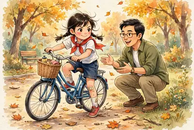
Kiên trì nghĩa là gì?
Là quyết tâm làm đến cùng, gặp khó không bỏ cuộc.
Trong học tập: làm bài tập mỗi ngày. Chưa hiểu thì học lại, hỏi thầy cô.
Trong lao động: tưới cây, chăm vườn đều đặn mỗi ngày.
Khi tập việc khó (đi xe đạp, bơi, đàn): ngã thì đứng dậy tập tiếp.
Rùa thắng, nhờ kiên trì — cứ đi đều, không bỏ cuộc. Thỏ nhanh nhưng chủ quan, mải ngủ nên thua.
Siêng năng, kiên trì giúp em làm được việc khó. Bí quyết: chia việc khó thành việc nhỏ, làm mỗi ngày một ít.
Người siêng năng, kiên trì thường thành công. Mọi người cũng tin tưởng em hơn.
Trái lại là lười biếng và mau nản: việc bị dồn lại, việc làm bỏ dở giữa chừng.
Tục ngữ dạy: “Có công mài sắt, có ngày nên kim.” Nghĩa là: cứ kiên trì làm, việc khó mấy cũng xong.
Đáp án: cụm 2️⃣ “siêng năng, kiên trì”. Vì sao: cả bài học nói về hai đức tính này — bỏ cụm đó đi, câu mất hẳn ý chính. “Việc khó” và “giúp em” chỉ là phần phụ quanh ý chính đó.
⚡ Nhớ nhanh
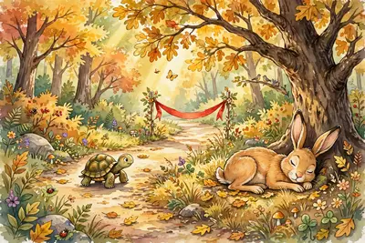
Nhìn hình: vì sao Rùa thắng Thỏ?
Vì Rùa kiên trì, đi đều không nghỉ. Thỏ chủ quan, mải ngủ.
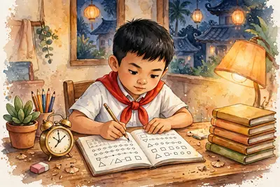
✏️ Học bài mỗi ngày, làm từng bước một. Đó là siêng năng, kiên trì trong học tập. (Tranh minh họa do AI vẽ)
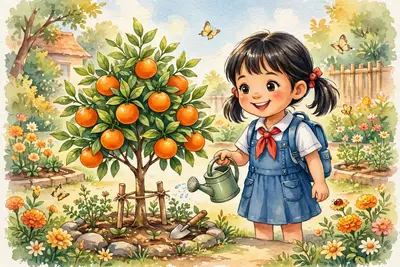
🍊 Cây được tưới mỗi ngày nay đã trĩu quả. Việc chăm chỉ đều đặn luôn cho “quả ngọt”. (Tranh minh họa do AI vẽ)
⭐ Điểm cần nhớ:
Siêng năng = làm việc chăm chỉ, đều đặn.
Kiên trì = làm đến cùng, không bỏ cuộc.
Hai đức tính này giúp em thành công, được mọi người tin tưởng.
Tránh: lười biếng, mau nản, bỏ dở giữa chừng.
💡 Mẹo nhớ:“Có công mài sắt, có ngày nên kim” — làm đều mỗi ngày, việc khó cũng xong.
🔍 Bí mật thú vị: Học 10–15 phút mỗi ngày dễ nhớ hơn học dồn một lần thật lâu. Chia nhỏ việc ra chính là “bí kíp” của người kiên trì!
🧠 Sơ đồ tư duy
❓ Câu hỏi gợi nhớ
Siêng năng là làm việc chăm chỉ, đều đặn mỗi ngày. Kiên trì là làm đến cùng, gặp khó không bỏ cuộc. Hai đức tính này bổ sung cho nhau.
Ví dụ: làm bài tập mỗi ngày, bài chưa hiểu thì học lại và hỏi thầy cô, không bỏ dở bài khó.
Bạn đã trồng cây và tưới nước, chăm sóc đều đặn mỗi ngày trong thời gian dài. Đó là siêng năng, kiên trì trong lao động.
Dạy em kiên trì: cứ chăm chỉ làm đều đặn, việc khó đến mấy cũng sẽ làm được, như mài mãi thanh sắt cũng thành cây kim.
Em không bỏ cuộc: chia bài thành từng bước nhỏ, làm từng bước một. Chưa ra thì hỏi cô hoặc bạn, nghỉ một lát rồi làm tiếp.
🎬 Minh làm vỡ chậu hoa của lớp. Không ai nhìn thấy cả. Cô giáo hỏi: “Ai làm vỡ chậu hoa?” Cả lớp im lặng. Minh run run giơ tay: “Thưa cô, em ạ. Em xin lỗi cô.” Theo em, Minh làm vậy có dũng cảm không?
Sự thật là những gì có thật, đúng như đã xảy ra.
Tôn trọng sự thật là nói đúng sự thật, làm đúng sự thật và bảo vệ điều đúng.
Người tôn trọng sự thật là người trung thực. Trung thực nghĩa là thật thà, không dối trá.
⚡ Nhớ nhanh
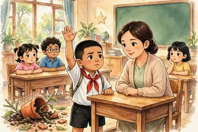
Tôn trọng sự thật là gì?
Là nói đúng, làm đúng những gì có thật.
Làm sai thì nhận lỗi. Không đổ lỗi cho bạn.
Trong kiểm tra: tự làm bài. Không chép bài bạn. Không dùng “phao” — phao là giấy ghi lén đáp án để chép, đó là gian lận.
Nhặt được của rơi thì trả lại người mất, hoặc nộp cho thầy cô. Của rơi là đồ của người khác đánh rơi.
Em nộp cho thầy cô hoặc chú bảo vệ để trả lại người mất. Không giữ làm của riêng — như thế mới là trung thực.
Người nói thật được mọi người tin tưởng, quý mến.
Ai cũng nói thật thì lớp học và xã hội công bằng, tốt đẹp.
Trái với tôn trọng sự thật là nói dối, gian lận. Nói dối một lần, lần sau nói thật cũng khó ai tin.
Nhớ chuyện “Chú bé chăn cừu”: cậu bé nói dối nhiều lần. Đến khi sói đến thật, không ai tin cậu nữa.
Đáp án: câu 2️⃣. Vì sao: cả đoạn kể chuyện để rút ra bài học đừng nói dối. Câu 1️⃣ (thích trêu đùa) và 3️⃣ (sói nguy hiểm) chỉ là chi tiết trong truyện, không phải ý chính.
⚡ Nhớ nhanh
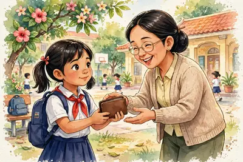
Nhìn hình: bạn gái đang làm việc đúng gì?
Trả lại ví nhặt được — việc làm trung thực, tôn trọng sự thật.
✋ Dũng cảm nhận lỗi khi làm sai — đó là tôn trọng sự thật. (Tranh minh họa do AI vẽ)
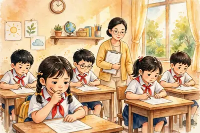
📝 Tự làm bài kiểm tra bằng sức của mình. Không chép bài, không dùng phao. (Tranh minh họa do AI vẽ)
⭐ Điểm cần nhớ:
Tôn trọng sự thật = nói đúng, làm đúng sự thật.
Biểu hiện: nhận lỗi, không gian lận, trả lại của rơi.
Người nói thật được mọi người tin tưởng, quý mến.
Nói dối, gian lận là sai — nói dối nhiều, nói thật cũng không ai tin.
💡 Mẹo nhớ: Nói thật thì lòng nhẹ. Nói dối thì lòng lo — cứ nói thật ngay từ đầu là dễ nhất.
🔍 Bí mật thú vị: Một lời nói dối thường kéo theo nhiều lời nói dối khác để “che” cho nó. Vì thế người nói dối rất mệt đầu!
🧠 Sơ đồ tư duy
❓ Câu hỏi gợi nhớ
Là nói đúng sự thật, làm đúng sự thật và bảo vệ điều đúng.
Vì chép bài là gian lận — trái với tôn trọng sự thật. Điểm số gian lận không phải sức học thật của em, và em sẽ không biết mình đang yếu ở đâu.
Vì bạn ấy trung thực, nói thật, làm đúng. Người trung thực luôn được mọi người tin tưởng giao việc quan trọng.
Đừng nói dối: nói dối nhiều lần thì khi nói thật cũng không ai tin nữa.
Em cảm ơn bạn nhưng từ chối: chép bài là gian lận. Em rủ bạn cùng ôn lại bài trước giờ kiểm tra — vừa đúng, vừa giữ được tình bạn.
🎬 Trước đây, sáng nào mẹ cũng buộc giày, xách cặp cho Tùng. Nay khác rồi: Tùng tự buộc giày, tự xách cặp. Mẹ chỉ đứng nhìn và cười. Tùng thấy mình “lớn” hẳn lên! (Nhìn hình trước – sau ở dưới nhé.)
Tự lập là tự làm những việc của mình.
Việc nào em làm được thì em tự làm. Không chờ người khác làm thay.
Tự lập không có nghĩa là làm một mình mọi thứ. Việc nào quá khó, em vẫn nhờ người lớn giúp.
⚡ Nhớ nhanh
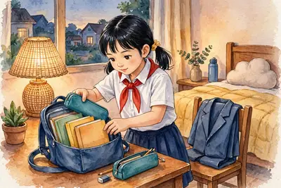
Tự lập là gì?
Là tự làm những việc của mình, không chờ người khác làm thay.
Ở nhà: tự gấp chăn. Tự dọn phòng. Tự chuẩn bị cặp sách, quần áo cho hôm sau.
Ở trường: tự làm bài tập. Tự trực nhật lớp — trực nhật là đến lượt em dọn vệ sinh lớp.
Tự chăm sóc mình: tự đánh răng, rửa mặt, ăn uống đúng giờ.
Ví dụ: tự gấp chăn và tự dọn phòng. Hoặc: tự chuẩn bị cặp sách, tự buộc giày. Việc nhỏ thôi nhưng rất đáng khen!
Tự lập giúp em trưởng thành hơn và tự tin hơn.
Cha mẹ, thầy cô cũng vui và yên tâm về em.
Trái với tự lập là ỷ lại: việc của mình mà chờ người khác làm thay.
Ỷ lại lâu ngày, em sẽ không biết tự làm gì. Lớn lên sẽ rất vất vả.
Đáp án: câu 2️⃣. Vì sao: cả đoạn kể về việc Na tự lập và kết quả tốt của nó. Câu 1️⃣ (lời khen) và 3️⃣ (buộc giày nhanh) chỉ là chi tiết nhỏ, không bao quát được ý của cả đoạn.
⚡ Nhớ nhanh
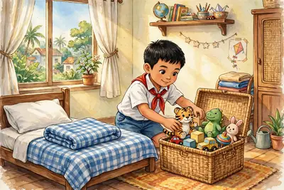
Nhìn hình: bạn nhỏ đang tự lập trong việc gì?
Bạn đang tự gấp chăn, dọn phòng của mình.
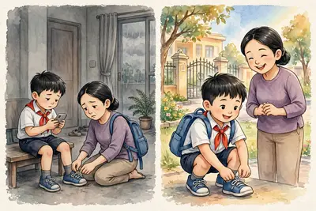
🔄 Trước – sau: Trước đây mẹ làm thay mọi việc. Nay bạn tự buộc giày, tự xách cặp — đó là tự lập! (Tranh minh họa do AI vẽ)
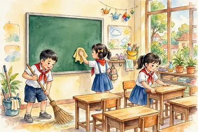
🧹 Tự trực nhật lớp — quét lớp, lau bảng, xếp bàn ghế. Việc của lớp mình, mình tự làm. (Tranh minh họa do AI vẽ)
⭐ Điểm cần nhớ:
Tự lập = tự làm những việc của mình.
Biểu hiện: tự dọn phòng, tự chuẩn bị cặp, tự trực nhật.
Tự lập giúp em tự tin và trưởng thành.
Tránh ỷ lại — việc của mình đừng chờ người khác làm thay.
💡 Mẹo nhớ: “Việc của mình — mình tự làm. Làm lần một hơi chậm, lần sau quen tay!”
🔍 Bí mật thú vị: Nhiều bạn nhỏ ở Nhật Bản tự đi bộ đến trường từ lớp 1. Các bạn ấy được dạy tự lập từ rất sớm — em cũng làm được như thế!
🧠 Sơ đồ tư duy
❓ Câu hỏi gợi nhớ
Là tự làm những việc của mình, không ỷ lại vào người khác.
Ví dụ: tự làm bài tập và tự trực nhật lớp. Tự giữ gìn đồ dùng của mình cũng là tự lập.
Nửa trước: mẹ làm thay mọi việc cho bạn. Nửa sau: bạn tự buộc giày, tự xách cặp. Nửa sau tốt hơn — vì bạn đã biết tự lập, mẹ vui và yên tâm hơn.
Em sẽ không biết tự làm việc gì, thiếu tự tin, và lớn lên sẽ rất vất vả khi phải tự lo cho mình.
Em tự soạn cặp sách (vở, bút, thước), ôn lại bài một lượt, chuẩn bị quần áo và đi ngủ sớm để mai tỉnh táo. Chuẩn bị trước là tự lập đấy!
🎬 Hoa vẽ rất đẹp. Nhưng Hoa hát chưa hay. Tùng đá bóng rất giỏi. Nhưng Tùng viết văn còn chậm. Bạn nào cũng có việc giỏi và việc chưa giỏi. Còn em thì sao? Em giỏi việc gì nhất?
Tự nhận thức bản thân là hiểu rõ về chính mình.
Hiểu mình giỏi việc gì — đó là điểm mạnh.
Hiểu mình chưa giỏi việc gì — đó là điểm yếu. Điểm yếu là việc mình làm chưa tốt.
Hiểu cả điều mình thích và điều mình chưa thích.
⚡ Nhớ nhanh
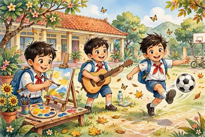
Điểm mạnh là gì? Điểm yếu là gì?
Điểm mạnh là việc em làm giỏi. Điểm yếu là việc em làm chưa tốt.
Cách 1 — Tự ngẫm nghĩ: ngẫm nghĩ là suy nghĩ kĩ về mình. Em tự hỏi: “Mình giỏi việc gì? Mình yếu việc gì?”
Cách 2 — Lắng nghe góp ý: thầy cô, cha mẹ, bạn bè nói cho em biết điều nên sửa. Đó là góp ý.
Cách 3 — Thử làm nhiều việc: vẽ, hát, thể thao, đọc sách… Thử rồi em mới biết mình hợp với việc gì.
Có 3 cách: 1) tự ngẫm nghĩ, 2) lắng nghe góp ý, 3) thử làm nhiều việc khác nhau.
Hiểu mình, em phát huy điểm mạnh. Ví dụ: giỏi vẽ thì học thêm lớp vẽ, tham gia thi vẽ.
Hiểu mình, em sửa được điểm yếu. Ví dụ: viết chậm thì luyện viết mỗi ngày một ít.
Đừng tự kiêu khi mình giỏi. Tự kiêu là khoe khoang, coi thường người khác.
Cũng đừng tự ti khi mình chưa giỏi. Tự ti là buồn, nghĩ mình kém cỏi. Ai cũng có điểm yếu — sửa dần là được.
Đáp án: cụm 2️⃣ “điểm mạnh và điểm yếu”. Vì sao: cả bài 6 nói về việc hiểu điểm mạnh, điểm yếu của mình. Hai cụm kia chỉ là phần phụ — bỏ cụm 2️⃣ đi thì câu mất ý chính.
⚡ Nhớ nhanh
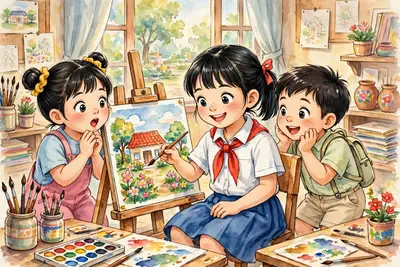
Nhìn hình: điểm mạnh của bạn gái là gì?
Bạn vẽ tranh giỏi — vẽ là điểm mạnh của bạn.
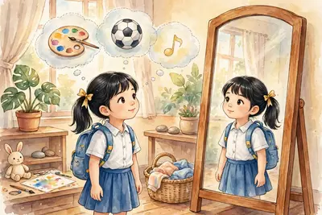
🪞 Soi gương và nghĩ về mình: em thích vẽ, thích bóng đá hay thích hát? Hiểu mình bắt đầu từ những câu hỏi như thế. (Tranh minh họa do AI vẽ)🎨⚽ Thử nhiều việc khác nhau — vẽ, đàn, đá bóng — để biết mình giỏi và hợp với việc gì nhất. (Tranh minh họa do AI vẽ)
⭐ Điểm cần nhớ:
Tự nhận thức = hiểu rõ điểm mạnh, điểm yếu của mình.
3 cách hiểu mình: tự ngẫm nghĩ, nghe góp ý, thử nhiều việc.
Hiểu mình để phát huy điểm mạnh, sửa điểm yếu.
Không tự kiêu khi giỏi, không tự ti khi chưa giỏi.
💡 Mẹo nhớ: “Biết mình — sửa mình — giỏi lên!” Hiểu mình là bước đầu tiên để tiến bộ.
🔍 Bí mật thú vị: Bộ não của em vẫn đang lớn lên mỗi ngày. Việc hôm nay em chưa giỏi, cứ luyện đều là mai sẽ giỏi hơn. Điểm yếu không đứng yên một chỗ đâu!
🧠 Sơ đồ tư duy
❓ Câu hỏi gợi nhớ
Là hiểu rõ về chính mình: mình giỏi việc gì (điểm mạnh), chưa giỏi việc gì (điểm yếu), và mình thích điều gì.
Bạn đang dùng cách 3 — thử làm nhiều việc khác nhau. Thử rồi mới biết mình giỏi và hợp với việc gì.
Vì ai cũng có điểm yếu. Điểm yếu sửa dần mỗi ngày là sẽ tốt lên. Tự ti chỉ làm em không dám thử, mà không thử thì không giỏi được.
Em biết điểm mạnh của mình là vẽ đẹp, điểm yếu là chữ viết. Em sẽ phát huy việc vẽ và luyện viết mỗi ngày để sửa điểm yếu.
Em cảm ơn cô, không buồn lâu và không tự ti. Em luyện viết mỗi ngày một trang để chữ đẹp dần lên. Góp ý là món quà giúp em tiến bộ.
Bài 9. Công dân nước Cộng hòa xã hội chủ nghĩa Việt Nam
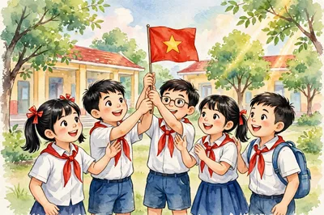
🎬 Sáng thứ Hai, cả lớp đứng nghiêm chào cờ và hát Quốc ca. Cô nói: “Các em là công dân Việt Nam đấy!” Công dân nghĩa là gì nhỉ?
Công dân là người có quốc tịch của một nước.
Quốc tịch là sự gắn bó pháp lí của một người với một nước. Pháp lí nghĩa là theo pháp luật.
Nhờ có quốc tịch, người đó được nước đó bảo vệ.
Ví dụ: người có quốc tịch Việt Nam là công dân Việt Nam.
⚡ Nhớ nhanh
Công dân là ai?
Là người có quốc tịch của một nước, ví dụ công dân Việt Nam là người có quốc tịch Việt Nam.
Trẻ em cũng là công dân. Không chỉ người lớn mới là công dân.
Quyền là điều công dân được hưởng theo pháp luật. Ví dụ: quyền đi học, quyền được bảo vệ.
Nghĩa vụ là điều công dân phải làm theo pháp luật. Ví dụ: học tập tốt, chấp hành luật giao thông.
Quyền và nghĩa vụ đi đôi với nhau: được hưởng quyền thì cũng phải làm tròn nghĩa vụ.
Đi kèm với nghĩa vụ học tập tốt. Có quyền đi học thì cũng phải học chăm chỉ.
Mọi công dân đều bình đẳng trước pháp luật. Bình đẳng nghĩa là ngang nhau, không ai được ưu tiên hay bị phân biệt.
Tôn trọng Tổ quốc: đứng nghiêm khi chào cờ, hát Quốc ca.
Quốc kỳ và Quốc ca là biểu tượng thiêng liêng của nước mình.
Giữ gìn tiếng Việt: nói và viết tiếng Việt đúng, rõ ràng. Ở nước ngoài, công dân Việt Nam được Nhà nước Việt Nam bảo vệ.
Đáp án: câu 2️⃣. Vì sao: đứng nghiêm và hát Quốc ca chính là cách tôn trọng Tổ quốc. Câu 1️⃣ và 3️⃣ chỉ là chi tiết nhỏ trong đoạn, không phải ý chính.
⚡ Nhớ nhanh
Quyền và nghĩa vụ đi với nhau thế nào?
Quyền và nghĩa vụ đi đôi với nhau: em có quyền đi học thì cũng có nghĩa vụ học tập tốt.
⭐ Điểm cần nhớ:
Công dân = người có quốc tịch của một nước.
Trẻ em cũng là công dân, không chỉ người lớn.
Quyền = điều được hưởng; nghĩa vụ = điều phải làm.
Quyền và nghĩa vụ luôn đi đôi với nhau.
💡 Mẹo nhớ: Quyền và Nghĩa vụ như hai mặt của một đồng xu — lúc nào cũng đi cùng nhau.
🔍 Bí mật thú vị: Quốc kỳ Việt Nam là lá cờ đỏ sao vàng: nền đỏ, ở giữa có ngôi sao vàng năm cánh.
🧠 Sơ đồ tư duy
❓ Câu hỏi gợi nhớ
Là người có quốc tịch của một nước. Ví dụ: người có quốc tịch Việt Nam là công dân Việt Nam.
Có. Trẻ em sinh ra có quốc tịch Việt Nam cũng là công dân Việt Nam. Công dân không chỉ là người lớn.
Quyền là điều công dân được hưởng theo pháp luật, ví dụ quyền đi học và quyền được bảo vệ.
Nghĩa vụ là điều công dân phải làm theo pháp luật, ví dụ học tập tốt và chấp hành luật giao thông.
Em đứng nghiêm trang và hát Quốc ca. Vì đó là cách tôn trọng Tổ quốc.
🃏 Flashcard của bài
Hình minh họa: Công dân nước Cộng hòa xã hội chủ nghĩa Việt Nam.
🎬 Em có biết không? Luật Trẻ em dành riêng cho các em tới 4 nhóm quyền. Hôm nay, mình khám phá cả 4 nhóm nhé!
Trẻ em là người dưới 16 tuổi theo Luật Trẻ em.
Trẻ em được hưởng các quyền riêng dành cho mình.
Có 4 nhóm quyền của trẻ em: sống còn, phát triển, bảo vệ, tham gia.
Gia đình, nhà trường và toàn xã hội đều có trách nhiệm bảo vệ quyền trẻ em.
⚡ Nhớ nhanh
Trẻ em là ai?
Là người dưới 16 tuổi theo Luật Trẻ em, được hưởng các quyền riêng dành cho mình.
Quyền sống còn: được sống, được chăm sóc sức khỏe và ăn uống đầy đủ. Ví dụ: khi ốm, trẻ em được đưa đi khám bệnh.
Trẻ em có quyền được khai sinh, có họ tên và quốc tịch.
Quyền phát triển: được học tập, vui chơi và phát triển tài năng.
Ví dụ: trẻ em được đến trường và chơi thể thao sau giờ học.
Sống còn, phát triển, bảo vệ, tham gia.
Quyền bảo vệ: không bị bạo lực, bóc lột hay xâm hại.
Bạo lực là bị đánh đập. Bóc lột là bị bắt làm việc nặng nhọc.
Khi bị bắt nạt, em nói với người lớn tin cậy hoặc gọi tổng đài 111. Gọi 111 miễn phí.
Quyền tham gia: được nói lên ý kiến về việc liên quan đến mình. Ví dụ: nói ý kiến khi lớp chọn hoạt động ngoại khóa.
Đáp án: câu 3️⃣. Vì sao: nói với người lớn tin cậy chính là cách trẻ em tự bảo vệ mình. Câu 1️⃣ và 2️⃣ đều là cách làm sai — im lặng thì vẫn bị bắt nạt, đánh lại thì gây thêm chuyện.
⚡ Nhớ nhanh
4 nhóm quyền của trẻ em là gì?
Là quyền sống còn, quyền phát triển, quyền bảo vệ và quyền tham gia.
⭐ Điểm cần nhớ:
Trẻ em = người dưới 16 tuổi theo Luật Trẻ em.
4 nhóm quyền: sống còn, phát triển, bảo vệ, tham gia.
Bị bắt nạt: nói người lớn tin cậy hoặc gọi 111.
Gia đình, nhà trường, xã hội cùng bảo vệ trẻ em.
💡 Mẹo nhớ: 4 nhóm quyền: Sống còn – Phát triển – Bảo vệ – Tham gia.
🔍 Bí mật thú vị: Tổng đài 111 hoạt động cả ngày lẫn đêm, gọi miễn phí, để bảo vệ trẻ em trên khắp cả nước.
🧠 Sơ đồ tư duy
❓ Câu hỏi gợi nhớ
Là người dưới 16 tuổi theo Luật Trẻ em.
Sống còn, phát triển, bảo vệ, tham gia.
Là được học tập, vui chơi và phát triển tài năng. Ví dụ: trẻ em được đến trường và chơi thể thao.
Nói với người lớn tin cậy hoặc gọi 111. Tổng đài 111 là số bảo vệ trẻ em, gọi miễn phí.
Em nói ý kiến của mình trong giờ sinh hoạt lớp. Đó chính là quyền tham gia — ý kiến của trẻ em được lắng nghe và tôn trọng.
🎬 Lớp 6A đang chọn trò chơi cho buổi sinh hoạt. Cô hỏi: “Ai có ý kiến khác không?” Mai giơ tay. Việc Mai làm chính là thực hiện một quyền của trẻ em đấy!
Bổn phận là điều mình phải làm, đi đôi với quyền được hưởng.
Ví dụ: em được đi học thì phải học tập chăm chỉ.
Thực hiện quyền đi đôi với bổn phận: vừa hưởng quyền, vừa làm tròn bổn phận.
Bổn phận của trẻ em có ở gia đình, ở trường và với môi trường.
⚡ Nhớ nhanh
Quyền đi đôi với bổn phận nghĩa là gì?
Là vừa được hưởng quyền, vừa phải làm tròn bổn phận, ví dụ được đi học thì phải học chăm chỉ.
Với gia đình: yêu quý, kính trọng ông bà, cha mẹ.
Giúp việc nhà vừa sức: quét nhà, gấp quần áo.
Ở trường: tôn trọng thầy cô và đoàn kết với bạn bè.
Lớp học vui khi mọi người tôn trọng nhau.
Tôn trọng thầy cô và đoàn kết với bạn bè.
Với môi trường: bỏ rác đúng chỗ, giữ trường lớp sạch sẽ.
Trẻ em không được làm việc nguy hiểm, nặng nhọc. Pháp luật cấm bóc lột sức lao động của trẻ em.
Thấy bạn bị bắt nạt: báo thầy cô, người lớn để giúp bạn.
Khi quyền bị xâm phạm: nói với người lớn tin cậy hoặc gọi tổng đài 111.
Đáp án: câu 2️⃣. Vì sao: câu này nói về một quyền (được đi học) đi cùng một bổn phận (học chăm chỉ). Câu 1️⃣ và 3️⃣ chỉ là cảm xúc bên lề, không phải ý chính.
⚡ Nhớ nhanh
Khi bị xâm phạm quyền thì làm gì?
Nói với người lớn tin cậy hoặc gọi tổng đài 111 để được bảo vệ.
⭐ Điểm cần nhớ:
Bổn phận = điều phải làm, đi đôi với quyền.
Gia đình: kính trọng ông bà, cha mẹ, giúp việc vừa sức.
Trường: tôn trọng thầy cô, đoàn kết với bạn bè.
Quyền bị xâm phạm: nói người lớn tin cậy hoặc gọi 111.
💡 Mẹo nhớ: Có quyền thì có bổn phận — hưởng quyền nào, làm tròn bổn phận đó.
🔍 Bí mật thú vị: Giờ sinh hoạt lớp là lúc ý kiến của em được lắng nghe và tôn trọng — đó chính là quyền tham gia.
🧠 Sơ đồ tư duy
❓ Câu hỏi gợi nhớ
Là điều mình phải làm, đi đôi với quyền được hưởng. Ví dụ: em được đi học thì phải học tập chăm chỉ.
Yêu quý, kính trọng ông bà, cha mẹ và giúp việc nhà vừa sức. Ví dụ: em quét nhà, gấp quần áo giúp mẹ.
Tôn trọng thầy cô, đoàn kết với bạn bè. Lớp học vui khi mọi người tôn trọng nhau.
Nói với người lớn tin cậy hoặc gọi 111. Người lớn sẽ giúp bảo vệ em.
Em báo với thầy cô hoặc người lớn để giúp bạn. Người chứng kiến cũng góp phần bảo vệ bạn bị bắt nạt.